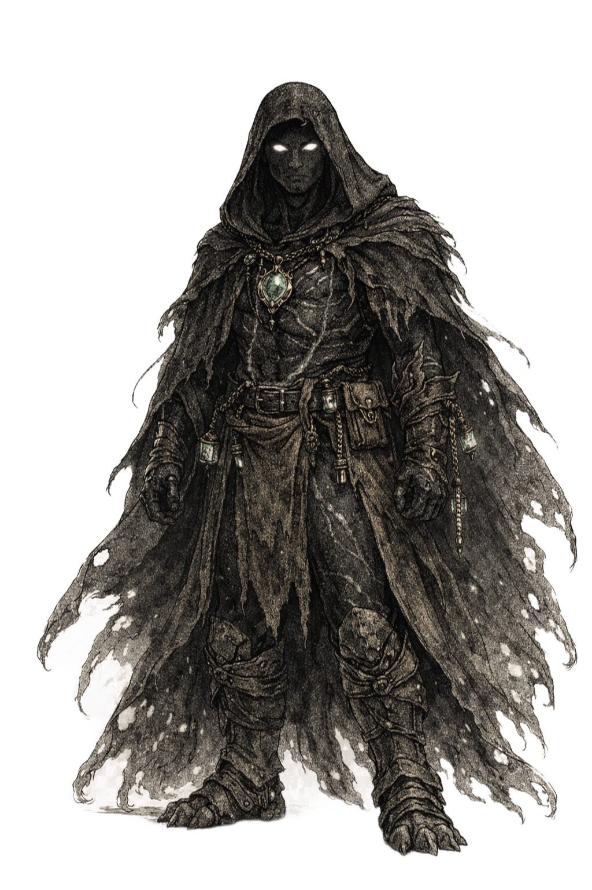

Espécie de Varkhul
Gnottover

Características dos Gnottover
Tipo de Criatura: Humanoide
Idade: Os Gnottover, conhecidos como "Tecidos pelo Vazio", atingem a maturidade por volta dos 100 anos de idade. Devido à sua origem ligada ao aprisionamento do Vazio e à sua biologia de "dissipadores de energia", possuem uma longevidade excepcional, vivendo em média 1.500 anos.
Tamanho: Médio (1.5 - 2,1 metros de altura)
Deslocamento: 9 metros
Visão do Espectro Negativo: Os olhos dos Gnottover são pálidos e sem pigmento, compostos por bastonetes sintonizados ao espectro ultravioleta. Você percebe o mundo por contraste negativo, vendo o deslocamento do ar e a ausência da radiação de fundo em vez da luz normal. Você possui Percepção às Cegas com alcance de 9m, o que permite navegar perfeitamente na escuridão absoluta e perceber entidades invisíveis com base em seu deslocamento térmico e atmosférico. No entanto, como seus olhos são hipersensíveis à luz, você sofre de Sensibilidade à Luz Solar. Você tem Desvantagem em jogadas de ataque e em testes de Percepção que dependem da visão quando você, o alvo do seu ataque ou aquilo que tenta perceber está sob luz solar direta.
Silenciador da Ressonância: Seu sistema nervoso não canaliza energia mágica; ele a amortece e a absorve como uma caixa de chumbo. Quando uma criatura a até 9 metros de você conjura uma magia ou usa um efeito mágico que causa dano, você pode usar sua Reação para atuar como um dreno taumaturgico. Você reduz o dano sofrido por você e por quaisquer aliados dentro de 3 metros de você em 1d10 mais seu Nível de Personagem. No entanto, absorver essa energia caótica é fisicamente agonizante para sua biologia superresfriada. Ao usar essa Reação, suas cicatrizes linfáticas do vazio brilham com uma luz cinza fosca contra sua pele negra, e você imediatamente ganha a condição Sobrecarga de Ressonância. Você pode usar essa Reação um número de vezes igual ao seu Bônus de Proficiência, e recupera todos os usos gastos quando termina um Descanso Longo.
Corpo Negro: A pele microcristalina dos Gnottover é um absorvedor de corpo negro quase perfeito, bebendo constantemente energia térmica e fotônica ambiente para alimentar seu metabolismo faminto. Você tem Resistência a dano de Fogo e Radiante. Além disso, seu corpo é agressivamente endotérmico e anormalmente frio ao toque, sugando constantemente o calor de seu entorno. Sempre que uma criatura o acerta com um ataque corpo a corpo enquanto estiver a até 5 pés de você, você drena passivamente sua energia cinética e térmica, causando dano de Frio ao atacante igual ao seu modificador de Força, Destreza ou Constituição (sua escolha, mínimo de 1).